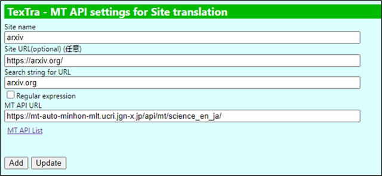
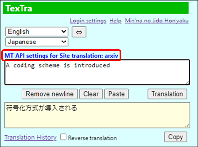
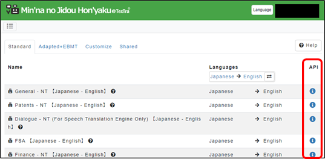
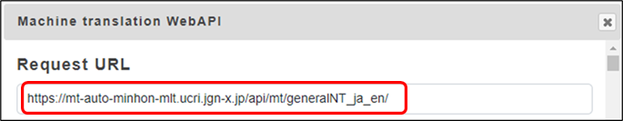

MT API settings for Site translation
Set MT API to use to translate
specified sites.


The MT API specified is used when "Search string for
URL" is matched a browsing site url.

You can get the MT API URLs from the site.
https://mt-auto-minhon-mlt.ucri.jgn-x.jp/content/mt/

